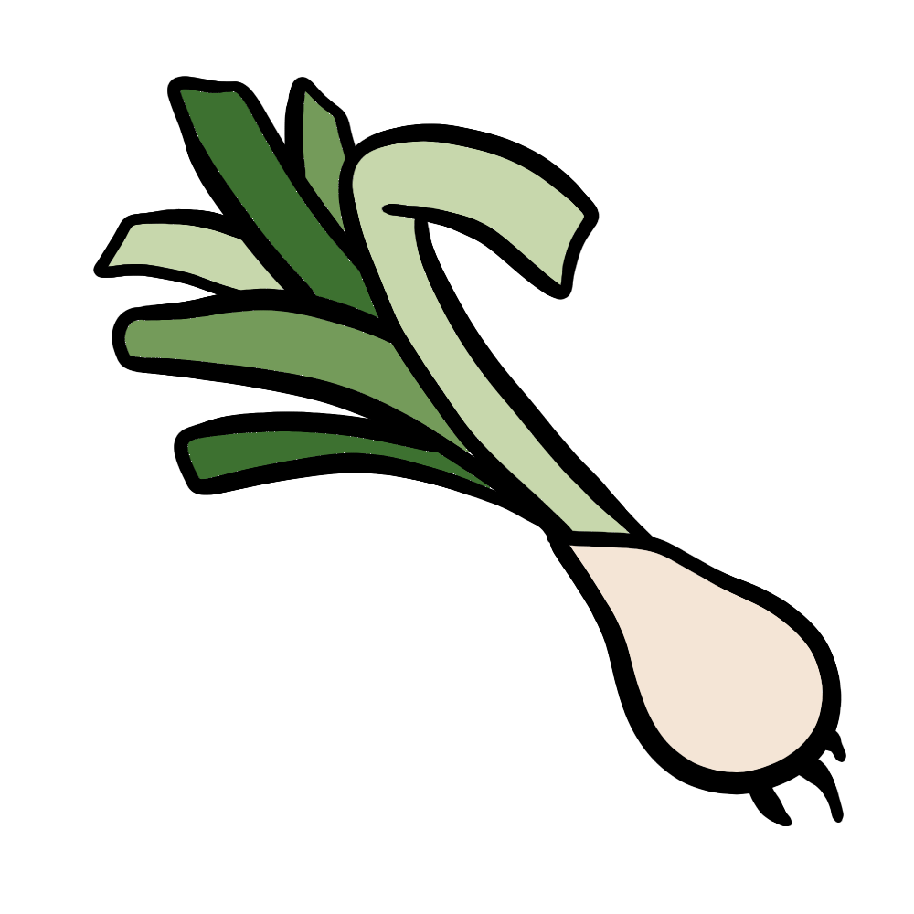

How to grow Spring Onion
A Step by step Guide
Spring onions, also known as scallions or green onions, are a fast-growing and versatile vegetable. They require minimal space and care, making them an excellent choice for beginners. Whether grown in a garden bed or a container, spring onions provide a steady supply of fresh, flavorful greens. Follow this guide to grow healthy and delicious spring onions at home.
Difficulty Rating: Easy
Best Season to Grow: Spring and Fall
Can Be Grown: Both Indoors and Outdoors
Supplies Needed to Grow Spring Onion
Spring onion seeds or seedlings
Well-draining, nutrient-rich soil
Compost or balanced fertilizer (10-10-10)
Garden trowel
Watering can or hose
Mulch (straw or wood chips)
Raised garden bed or containers (for small spaces)
Setting Up Your Spring Onion Garden
Choosing the Right Location
Sunlight: Spring onions thrive in full sun to partial shade, requiring at least 4-6 hours of sunlight per day.
Soil: Use loose, well-draining soil rich in organic matter, with a pH between 6.0 and 7.0.
Spacing: Sow seeds ½ inch apart in rows spaced 6-8 inches apart.
Indoor Setup: If growing indoors, use shallow containers (at least 6 inches deep) with drainage holes.
Preparing the Soil
Loosen the soil to a depth of at least 6 inches to encourage root growth.
Mix compost into the soil to provide essential nutrients.
Avoid heavy, compacted soils that can hinder growth.
Planting Spring Onion
Direct Sowing: Plant seeds ¼ inch deep in well-prepared soil.
Succession Planting: Sow seeds every 2-3 weeks for a continuous harvest.
Transplanting: If using seedlings, space them 1-2 inches apart in rows.
Caring for Your Spring Onion Plants

Watering
Keep the soil evenly moist but not waterlogged, providing 1 inch of water per week.
Water at the base of the plant to prevent fungal diseases.

Fertilizing
Apply a balanced fertilizer once at planting time.
Side-dress with compost every 3-4 weeks to encourage growth.

Mulching & Weed Control
Apply mulch around plants to retain moisture and suppress weeds.
Regularly remove weeds to prevent competition for nutrients.

Pest and Disease Prevention
Watch for pests such as onion maggots, aphids, and thrips.
Use insecticidal soap or neem oil to deter pests.
Rotate crops yearly to prevent soil-borne diseases like onion rot and mildew.

Harvesting
Spring onions are ready to harvest in 6-8 weeks after planting.
Harvest when they reach 6-12 inches in height, depending on preference.
Cut the green tops as needed or pull the entire plant for use.
By following these steps, you can successfully grow spring onions and enjoy fresh, homegrown produce in your meals. Happy gardening! 🌱